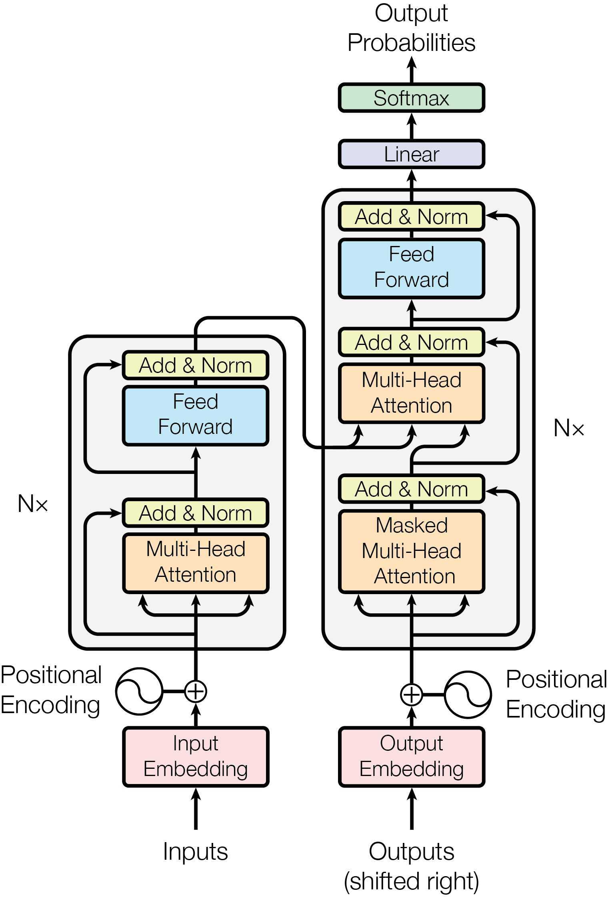
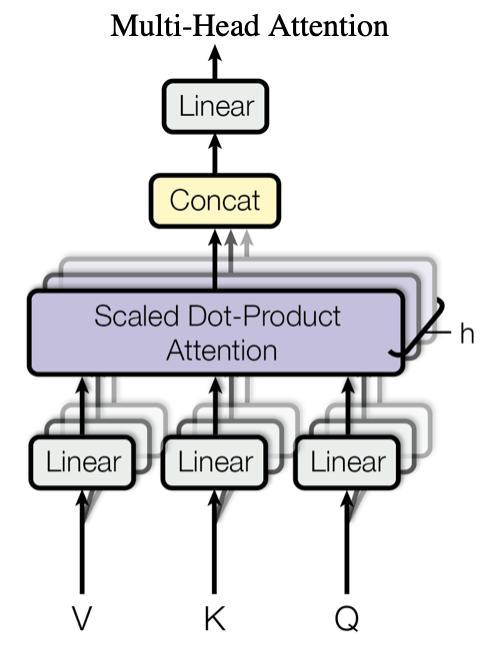

transformer是目前主流的NLP架构，为了对其有更深入的了解花了几天时间对其底层代码进行复现。这是学深度学习以来代码量和思维量最大的一次实践了，过程中处理张量格式真的痛苦，主体架构搭起来不难但是很多小细节太折磨了。最后代码跑通的时候真的爽。
先附上attention is all yoou
need一文中transformer的架构图，写代码的时候多看看这张图有助于理清逻辑，写完这张图也深深印在脑子里了。

transformer
数据构建
为了过程的完备性，这里简要交代一下如何将数据集转化为模型需要的格式。这一部分实际与transformer的架构关系不大，可以先行跳过。
采用一个中英翻译数据集，并将其导入成以下格式：
1 2 3 4 5 6 sentences = [ ['我 有 一 个 好 朋 友 P' , 'S i have a good friend . P' , 'i have a good friend . E P' ], ['我 有 零 个 女 朋 友 P' , 'S i have zero girl friend . P' , 'i have zero girl friend . E P' ] ... ]
其中中文数据在各字之间插入空格，并将长度不足的部分用“P”填充，作为编码器的输入。英文数据起始处插入“S”词元，长度不足部分用“P”填充，作为解码器输入。英文数据句末插入“E”词元，长度不足部分用“P”填充，作为解码器输出。以上以长度为8举例。
随后分别生成中英文词库src_vocab和sgt_vocab，格式为{词元:
序号}，为了方便，这里中文直接按字分词，英文直接按单词分词。
接下来定义一个make_data函数，用于使用词库映射将单词序列转化为数字序列。
1 2 3 4 5 6 7 8 9 10 11 12 13 14 15 def make_data (sentences ): """把单词序列转换为数字序列""" enc_inputs, dec_inputs, dec_outputs = [], [], [] for i in range (len (sentences)): enc_input = [[src_vocab[n] for n in sentences[i][0 ].split()]] dec_input = [[tgt_vocab[n] for n in sentences[i][1 ].split()]] dec_output = [[tgt_vocab[n] for n in sentences[i][2 ].split()]] enc_inputs.extend(enc_input) dec_inputs.extend(dec_input) dec_outputs.extend(dec_output) return torch.LongTensor(enc_inputs), torch.LongTensor(dec_inputs), torch.LongTensor(dec_outputs) enc_inputs, dec_inputs, dec_outputs = make_data(sentences)
接下来定义一个数据集，并生成数据迭代器。
1 2 3 4 5 6 7 8 9 10 11 12 13 14 15 class MyDataset (Data.Dataset): """自定义DataLoader""" def __init__ (self, enc_inputs, dec_inputs, dec_outputs ): super (MyDataset, self).__init__() self.enc_inputs = enc_inputs self.dec_inputs = dec_inputs self.dec_outputs = dec_outputs def __len__ (self ): return self.enc_inputs.shape[0 ] def __getitem__ (self,idx ): return enc_inputs[idx],dec_inputs[idx],dec_outputs[idx] loader = Data.DataLoader(MyDataset(enc_inputs, dec_inputs, dec_outputs), 16 , shuffle = True )
以上就是数据构建的过程，主要完成了以下工作：
将中英文翻译数据集导入，并添加起始符、结束符、填充符，转化为transformer需要的输入输出格式；
将文本数据词元化，并转化为数字序列enc_inputs, dec_inputs,
dec_outputs；
将enc_inputs, dec_inputs, dec_outputs装入数据迭代器；
下面是主干部分，这一部分将从底层实现transformer的位置编码、多头注意力、FFN等机制，并将其组合成encoder和decoder，搭建起一个完整的transformer模型。
首先需要定义模型参数。这里沿用原论文的参数。
1 2 3 4 5 6 d_model = 512 d_ff = 2048 d_k = d_v = 64 n_layers = 6 n_heads = 8
多头注意力
transformer采用了注意力机制，注意力机制可简单理解为如下：
存储着许多key-value对；
每次使用一个query查询，将query与每个key的关系作为权重对对应的value进行加权平均，得到该query对应的输出；
通过以上过程，query对应的输出根据和key的关系不同程度地捕获了关于所有value的信息。注意力分数有多种计算方式，在此不一一展开。
transformer的编码器和解码器内部采用的是自注意力，即每个向量同时作为query、key、value。而在编码器和解码器交接的位置，将编码器的输出作为key和value，将解码器的输入作为query。
此外，在解码器的自注意力层会遮蔽未预测的词元，即在对序列中的一个元素输出时，不应该考虑该元素之后的元素。
transformer还引入了多头注意力，即query、key、value会同时进入多个头，每个头都独立地计算注意力，抽取不同的特征，然后将每个头的输出合并得到最终输出。
mask矩阵
mask矩阵是一个01矩阵，将我们希望遮蔽的位置设为true，不希望遮蔽的部分设为false。在注意力计算时，会将mask矩阵为true的位置设置为一个很小的负数，在经过softmax后这些数就会变成机器0，以实现对这些值的屏蔽。
首先需要实现填充词元的mask，因为这一部分我们并不希望注意到。
1 2 3 4 5 6 7 8 def get_attn_pad_mask (seq_q, seq_k ): """ 用于mask掉pad词元 """ batch_size, len_q = seq_q.size() batch_size, len_k = seq_k.size() attn_pad_mask = seq_k.data.eq(0 ).unsqueeze(1 ) return attn_pad_mask.expand(batch_size, len_q, len_k)
除此之外，解码器中我们还需要一个mask矩阵以对未来的信息进行遮蔽，因为我们每次预测出一个词元，因此这个矩阵实际上是一个上三角矩阵。
1 2 3 4 5 6 7 8 def get_attn_subsequence_mask (seq ): """ 用于解码器中msk掉未预测出的词元 """ attn_shape = [seq.size(0 ), seq.size(1 ), seq.size(1 )] subsequence_mask = np.triu(np.ones(attn_shape), k=1 ) subsequence_mask = torch.from_numpy(subsequence_mask).byte() return subsequence_mask
缩放点积注意力
transformer中采用的是缩放点积注意力的计算方式，计算公式如下：
为保证无论向量长度如何点积的方差都为1，因此要除以sqrt(d_k);
缩放点积注意力的实现如下：
1 2 3 4 5 6 7 8 9 10 11 12 13 14 15 16 17 18 19 class ScaledDotProductAttention (nn.Module): """ 缩放点积注意力 """ def __init__ (self ): super (ScaledDotProductAttention, self).__init__() def forward (self, Q, K, V, attn_mask ): """ Q: [batch_size, n_heads, len_q, d_k] K: [batch_size, n_heads, len_k, d_k] V: [batch_size, n_heads, len_v(=len_k), d_v] attn_mask: [batch_size, n_heads, seq_len, seq_len] """ scores = torch.matmul(Q, K.transpose(-1 , -2 )) / np.sqrt(d_k) attn = nn.Softmax(dim=-1 )(scores) context = torch.matmul(attn, V) return context, attn
多头注意力
有了掩码的实现和注意力分数的计算，我们就可以实现多头注意力机制了。如前所述，多头注意力会使用多个注意力头抽取不同特征，再将输入合并，如下图所示：

多头注意力
除此之外，transformer中还用到了残差连接和层归一化。
1 2 3 4 5 6 7 8 9 10 11 12 13 14 15 16 17 18 19 20 21 22 23 24 25 26 27 28 29 30 31 32 33 34 35 36 37 38 class MultiHeadAttention (nn.Module): """这个Attention类可以实现: Encoder的Self-Attention Decoder的Masked Self-Attention Encoder-Decoder的Attention 输入：seq_len x d_model 输出：seq_len x d_model """ def __init__ (self ): super (MultiHeadAttention, self).__init__() self.W_Q = nn.Linear(d_model, n_heads*d_k, bias=False ) self.W_K = nn.Linear(d_model, n_heads*d_k, bias=False ) self.W_V = nn.Linear(d_model, n_heads*d_v, bias=False ) self.fc = nn.Linear(n_heads*d_v, d_model, bias=False ) def forward (self, input_Q, input_K, input_V, attn_mask ): """ input_Q: [batch_size, len_q, d_model] input_K: [batch_size, len_k, d_model] input_V: [batch_size, len_v(=len_k), d_model] attn_mask: [batch_size, seq_len, seq_len] """ residual, batch_size = input_Q, input_Q.size(0 ) Q = self.W_Q(input_Q).view(batch_size, -1 , n_heads, d_k).transpose(1 ,2 ) K = self.W_K(input_K).view(batch_size, -1 , n_heads, d_k).transpose(1 ,2 ) V = self.W_V(input_V).view(batch_size, -1 , n_heads, d_v).transpose(1 ,2 ) attn_mask = attn_mask.unsqueeze(1 ).repeat(1 , n_heads, 1 , 1 ) context, attn = ScaledDotProductAttention()(Q, K, V, attn_mask) context = context.transpose(1 , 2 ).reshape(batch_size, -1 , n_heads * d_v) output = self.fc(context) return nn.LayerNorm(d_model).to(device)(output + residual), attn
位置编码
根RNN、CNN不同，自注意力没有记录位置信息，因此需要将位置信息加入输入中。transformer构建了一个位置编码矩阵P：
1 2 3 4 5 6 7 8 9 10 11 12 13 14 15 16 17 18 19 20 21 22 class PositionalEncoding (nn.Module): """ 生成位置编码矩阵 """ def __init__ (self, d_modle, dropout=0.01 , max_len=5000 ): super (PositionalEncoding,self).__init__() self.dropout = nn.Dropout(p=dropout) pe = torch.zeros(max_len, d_modle) position = torch.arange(0 , max_len, dtype=torch.float ).unsqueeze(1 ) div_term = torch.exp(torch.arange(0 , d_modle, 2 ).float ()*(-math.log(10000.0 )/d_modle)) pe[:, 0 ::2 ] = torch.sin(position * div_term) pe[:, 1 ::2 ] = torch.cos(position * div_term) pe = pe.unsqueeze(0 ).transpose(0 ,1 ) self.register_buffer('pe' ,pe) def forward (self, x ): """ x:[seq_len, batch_size, d_modle] """ x += self.pe[:x.size(0 ),:] return self.dropout(x)
FFN层
FFN，即基于位置的前馈神经网络（Positionwise Feed Forward
Net）是transformer中的又一重要子层，FFN层本质上是全连接层，可以理解为是两个核窗口为1的一维卷积层。
1 2 3 4 5 6 7 8 9 10 11 12 13 14 15 16 17 class PoswiseFeedForwardNet (nn.Module): """ 基于位置的前馈神经网络 """ def __init__ (self ): super (PoswiseFeedForwardNet, self).__init__() self.layers = nn.Sequential(nn.Linear(d_model, d_ff, bias=False ), nn.ReLU(), nn.Linear(d_ff, d_model, bias=False )) def forward (self, inputs ): """ inputs: [batch_size, seq_len, d_model] """ residual = inputs outputs = self.layers(inputs) return nn.LayerNorm(d_model).to(device)(outputs + residual)
Encoder
我们已经有了搭建transformer的必要组件，接下来只需按一开始的模型图进行搭建。首先我们需要一个encoder块，它由多头注意力层和FFN层组成。
1 2 3 4 5 6 7 8 9 10 11 12 13 14 15 16 17 class EncoderLayer (nn.Module): """ 一个encoder块 """ def __init__ (self ): super (EncoderLayer, self).__init__() self.self_attn = MultiHeadAttention() self.ffn = PoswiseFeedForwardNet() def forward (self, inputs, mask ): """ inputs: [batch_size, src_len, d_model] mask: [batch_size, src_len, src_len] mask矩阵(pad mask or sequence mask) """ outputs, attn = self.self_attn(inputs,inputs,inputs,mask) outputs = self.ffn(outputs) return outputs,attn
有了一个encoder块后，我们需要对多个块进行堆叠组成编码器。在进入编码器前，还需要对词元进行embedding并加入位置信息，我们也在这里一并实现。
1 2 3 4 5 6 7 8 9 10 11 12 13 14 15 16 17 18 19 20 class Encoder (nn.Module): def __init__ (self ): super (Encoder, self).__init__() self.embedding = nn.Embedding(src_vocab_size, d_model) self.pos_emb = PositionalEncoding(d_model) self.layers = nn.ModuleList([EncoderLayer() for _ in range (0 , n_layers)]) def forward (self, inputs ): """ enc_inputs: [batch_size, src_len] """ enc_outputs = self.embedding(inputs) enc_outputs = self.pos_emb(enc_outputs.transpose(0 , 1 )).transpose(0 , 1 ) attn_mask = get_attn_pad_mask(enc_inputs, enc_inputs) enc_self_attns = [] for layer in self.layers: enc_outputs, enc_self_attn = layer(enc_outputs, attn_mask) enc_self_attns.append(enc_self_attn) return enc_outputs, enc_self_attns
Decoder
与编码器类似，我们也可以实现解码器。解码器出了自注意力和FFN之外，还需要一个以编码器输出为key和value、以解码器输入为query的多头注意力层。
1 2 3 4 5 6 7 8 9 10 11 12 13 14 15 16 17 18 19 20 21 22 class DecoderLayer (nn.Module): def __init__ (self ): super (DecoderLayer, self).__init__() self.dec_self_attn = MultiHeadAttention() self.dec_enc_attn = MultiHeadAttention() self.pos_ffn = PoswiseFeedForwardNet() def forward (self, dec_inputs, enc_outputs, dec_self_attn_mask, dec_enc_attn_mask ): """ dec_inputs: [batch_size, tgt_len, d_model] enc_outputs: [batch_size, src_len, d_model] dec_self_attn_mask: [batch_size, tgt_len, tgt_len] dec_enc_attn_mask: [batch_size, tgt_len, src_len] """ dec_outputs, dec_self_attn = self.dec_self_attn(dec_inputs, dec_inputs, dec_inputs, dec_self_attn_mask) dec_outputs, dec_enc_attn = self.dec_enc_attn(dec_outputs, enc_outputs, enc_outputs, dec_enc_attn_mask) dec_outputs = self.pos_ffn(dec_outputs) return dec_outputs, dec_self_attn, dec_enc_attn
对多个块进行堆叠构成解码器。
1 2 3 4 5 6 7 8 9 10 11 12 13 14 15 16 17 18 19 20 21 22 23 24 25 26 27 28 29 30 31 32 33 class Decoder (nn.Module): def __init__ (self ): super (Decoder, self).__init__() self.tgt_emb = nn.Embedding(tgt_vocab_size, d_model) self.pos_emb = PositionalEncoding(d_model) self.layers = nn.ModuleList([DecoderLayer() for _ in range (n_layers)]) def forward (self, dec_inputs, enc_inputs, enc_outputs ): """ dec_inputs: [batch_size, tgt_len] enc_inputs: [batch_size, src_len] enc_outputs: [batch_size, src_len, d_model] """ dec_outputs = self.tgt_emb(dec_inputs) dec_outputs = self.pos_emb(dec_outputs.transpose(0 , 1 )).transpose(0 , 1 ).to(device) dec_self_attn_pad_mask = get_attn_pad_mask(dec_inputs, dec_inputs).to(device) dec_self_attn_subsequence_mask = get_attn_subsequence_mask(dec_inputs).to( device) dec_self_attn_mask = torch.gt((dec_self_attn_pad_mask + dec_self_attn_subsequence_mask), 0 ).to(device) dec_enc_attn_mask = get_attn_pad_mask(dec_inputs, enc_inputs) dec_self_attns, dec_enc_attns = [], [] for layer in self.layers: dec_outputs, dec_self_attn, dec_enc_attn = layer(dec_outputs, enc_outputs, dec_self_attn_mask, dec_enc_attn_mask) dec_self_attns.append(dec_self_attn) dec_enc_attns.append(dec_enc_attn) return dec_outputs, dec_self_attns, dec_enc_attns
组装
有了编码器和解码器，我们可以用它们搭建起最终的transformer了。
1 2 3 4 5 6 7 8 9 10 11 12 13 14 15 16 17 18 19 class Transformer (nn.Module): def __init__ (self ): super (Transformer, self).__init__() self.encoder = Encoder().to(device) self.decoder = Decoder().to(device) self.projection = nn.Linear(d_model, tgt_vocab_size, bias=False ).to(device) def forward (self, enc_inputs, dec_inputs ): """ enc_inputs: [batch_size, src_len] dec_inputs: [batch_size, tgt_len] """ enc_outputs, enc_self_attns = self.encoder(enc_inputs) dec_outputs, dec_self_attns, dec_enc_attns = self.decoder(dec_inputs, enc_inputs, enc_outputs) dec_logits = self.projection(dec_outputs) return dec_logits.view(-1 , dec_logits.size(-1 )), enc_self_attns, dec_self_attns, dec_enc_attns
训练
损失函数使用交叉熵损失，优化器使用SGD，对模型进行训练。
1 2 3 4 5 6 7 8 9 10 11 12 13 14 15 16 17 18 19 20 21 model = Transformer().to(device) criterion = nn.CrossEntropyLoss(ignore_index=0 ) optimizer = optim.SGD(model.parameters(), lr=1e-3 , momentum=0.99 ) for epoch in range (epochs): for enc_inputs, dec_inputs, dec_outputs in loader: """ enc_inputs: [batch_size, src_len] dec_inputs: [batch_size, tgt_len] dec_outputs: [batch_size, tgt_len] """ enc_inputs, dec_inputs, dec_outputs = enc_inputs.to(device), dec_inputs.to(device), dec_outputs.to(device) outputs, enc_self_attns, dec_self_attns, dec_enc_attns = model(enc_inputs, dec_inputs) loss = criterion(outputs, dec_outputs.view(-1 )) print ('Epoch:' , '%04d' % (epoch + 1 ), 'loss =' , '{:.6f}' .format (loss)) optimizer.zero_grad() loss.backward() optimizer.step()